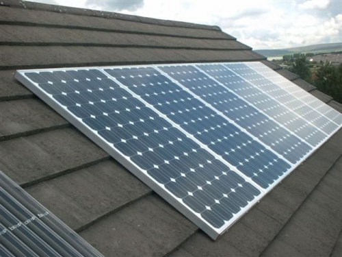
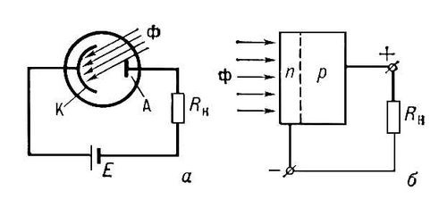
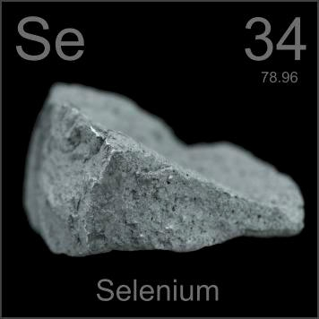
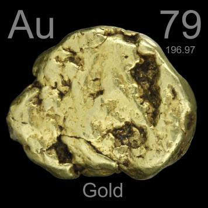
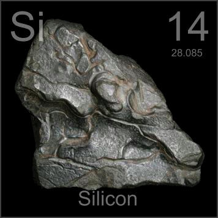
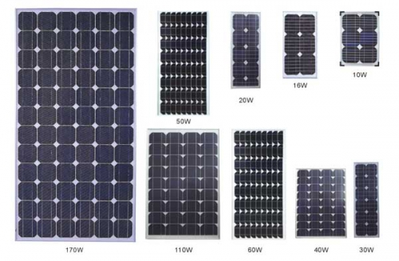

Что такое солнечная батарея


Мы часто пишем про различные виды альтернативной энергетики, в том числе про солнечную. Этой статьей начинается цикл статей про принципы работы различных устройств работающих на возобновляемой энергии. И первое что будет рассмотрено — солнечные батареи. Солнечная энергия в последнее время используется повсюду: в естественном освещении помещений, нагрева воды, сушки и иногда даже в приготовлении пищи. Однако самым важным использованием энергии солнца является, пожалуй, генерация электричества. И главный элемент такой генерации — солнечная батарея!
Строение солнечных батарей

Солнечная батарея состоит из фотоэлементов, соединенных последовательно и параллельно. Все фотоэлементы располагаются на каркасе из непроводящих материалов. Такая конфигурация позволяет собирать солнечные батареи требуемых характеристик (тока и напряжения). Кроме того, это позволяет заменять вышедшие из строя фотоэлементы простой заменой.
Принцип работы
Принцип работы фотоэлементов из которых состоит солнечная батарея основан на фотогальваническом эффекте. Этот эффект наблюдал еще Александр Эдмонд Беккерель в 1839 году. Впоследствии работы Эйнштейна в области фотоэффекта позволили описать явление количественно. Опыты Беккереля показали, что лучистую энергию солнца можно трансформировать в электричество с помощью специальных полупроводников, которые позже получили название фотоэлементы.
Вообще такой способ получения электричества должен быть наиболее эффективным, потому что является одноступенчатым. По сравнению с другой технологией преобразования солнечной энергии через термодинамический переход (Лучи -> Нагревание воды -> Пар -> Вращение турбины -> Электричество), меньше энергии теряется на переходы.
Строение фотоэлемента

Фотоэлемент на основе полупроводников состоит из двух слоев с разной проводимостью. К слоям с разных сторон подпаиваются контакты, которые используются для подключения к внешней цепи. Роль катода играет слой с n-проводимостью (электронная проводимость), роль анода — p-слой (дырочная проводимость).
Ток в n-слоя создается движение электронов, которые «выбиваются» при попадании на них света за счет фотоэффекта. Ток в p-слое создается «движением дырок». «Дырка» — атом, который потерял электрон, соответственно, перескакивание электронов с «дырки» на «дырку» создает «движение» дырок, хотя в пространстве сами «дырки» конечно не двигаются.
На стыке слоев с n- и p-проводимостью создается p-n-переход. Получается своего рода диод, которые может создавать разность потенциалов за счет попадание лучей света.
Физический механизм действия
Когда лучи света попадают на n-слой, за счет фотоэффекта образуются свободные электроны. Кроме этого, они получают дополнительную энергию и способны «перепрыгнуть» через потенциальный барьер p-n-перехода. Концентрация электронов и дырок изменяется и образуется разность потенциалов. Если замкнуть внешнюю цепь через нее начнет течь ток.
Разность потенциалов (а соответственно и ЭДС) которую может создавать фотоэлемент зависит от многих факторов: интенсивности солнечного излучения, площади фотоэлемента, КПД конструкции, температуры (при нагревании проводимость падает).
Из чего делают фотоэлементы?


Самый первый в мире фотоэлемент появился в 1883 году в лаборатории Чарьза Фриттса. Он был изготовлен из селена, покрытого золотом. Увы, но такой набор материалов показал невысокие результаты — около 1% КПД.

Революция в использовании фотоэлементов произошла тогда, когда в недрах лаборатории компании «Bell Telephone» был создан первый элемент на кремнии. Компания нуждалась в источнике электроэнергии для телефонных станцией, и, можно сказать, была первой компанией, которая использовала альтернативный источник на солнечной энергии.
Кремний до сих пор остается основных материалом для производства фотоэлементов. Вообще кремний (Silicium, Silicon) — второй по распространенности элемент на Земле, запасы его огромны. Однако в промышленном его использовании есть одна большая проблема — его очистка. Процесс этот очень трудоемкий и затратный, поэтому чистый кремний стоит дорого. Сейчас ведется поиск аналогов, которые бы не уступали кремнию по КПД. Перспективными считаются соединения меди, индия, селена, галлия и кадмия, а также органические фотоэлементы.
Солнечные батареи (Сборки)

Однако разность потенциалов, создаваемая одним фотоэлементов, мала для промышленного применения. Чтобы иметь возможность использовать солнечные элементы для электропитания устройств, их соединяют вместе. Тем самым получаются солнечные батарей (солнечные сборки, солнечные модули). Кроме того, фотоэлементы покрывают различными защитными слоями из стекла, пластмассы, различных пленок. Это делают для того, чтобы защитить хрупкий элемент.
Основной рабочей характеристикой солнечной батареи является пиковая мощность, которую выражают в Ваттах (Вт, W). Эта характеристика показывает выходную мощность батареи в оптимальных условиях: солнечном излучении 1 кВт/м2, температуре окружающей среды 25 oC, солнечном спектре шириной 45o(АМ1,5). В обычных условиях достичь таких показателей удается крайне редко, освещенность ниже, а модуль нагревается выше (до 60-70 градусов).
Соединяя фотоэлементы последовательно мы повышаем разность потенциалов, соединяя параллельно — ток. Таким образом комбинируя соединения можно добиться требуемых параметров по току и напряжению, а следовательно и по мощности. Кроме того, последовательно или параллельно можно соединять не только фотоэлементы в рамках одной солнечной батареи, но и солнечные батареи в целом.